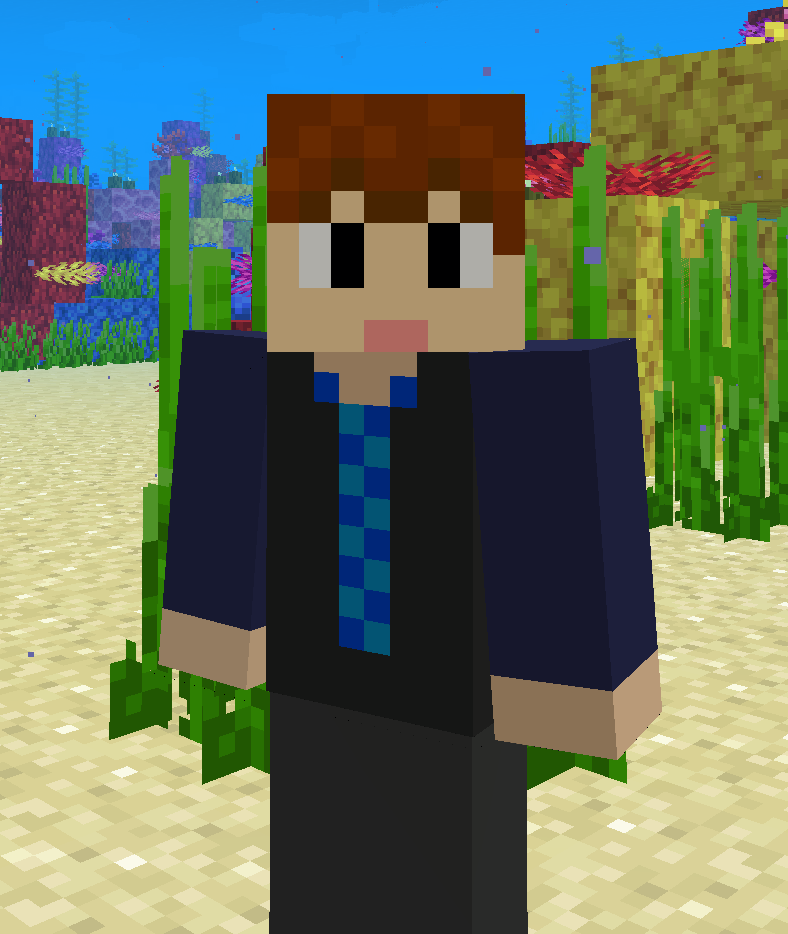
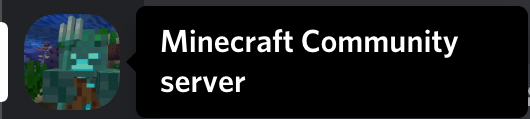
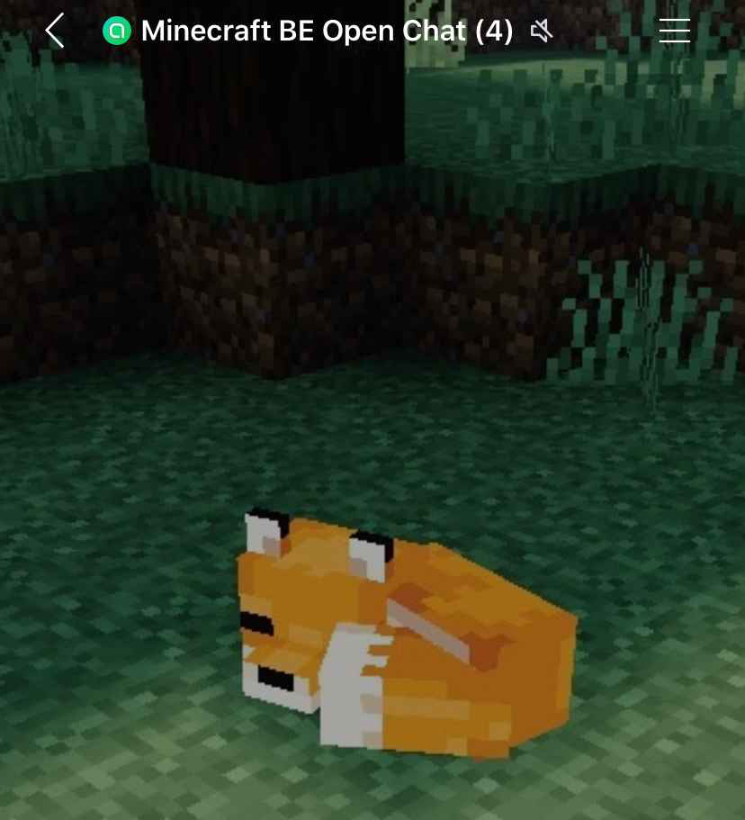
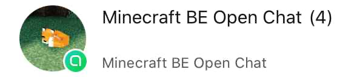

NARIの自己紹介！

みなさんこんにちは！NARI Channelのなりです！
NARI Channelでは、NARIの街プロサバイバルをはじめとしたシリーズを実況プレイしています。
街プロサバイバルというのは、街をサバイバルで作ろうプロジェクトの略称です。
この動画がみなさんの参考になるように、詳しく説明して作っています。
たくさん建築をしているので是非ご覧ください！
ESBEについて
私は、YouTubeだけでなく、Minecraft BE（統合版）で動作するShader
（影MODみたいなもの）を開発しています。ESBEの製作者さんのエリンギさんは、
ESBE 1G の開発、配布を中止し、今はESBE 2Gという新しいをShaderを作っています。
そこで、ESBE 1Gをいつもカスタマイズしていた私がなんと、ESBE 1Gの管理者なることが決定しました！！
Minecraft Community Serverについて
(Discord限定)
私はMinecraft Community Server (MCS)の管理者も行っています！

Minecraft BE（統合版）や、Minecarft JE(Java Edition)をやっている方は是非参加してみてください。
↓にあるリンクから参加することができます。
でも、Discordじゃ入れない...って人もいると思います。
招待リンクはこちらをクリック
ご安心ください！！
Minecraft Open Chatについて

Discordに参加できない人用のためにLINE Open Chatを使った Minecraft BE Open Chatをつくりました。
Discordで参加できなくて困っている方は是非入ってみてください！！
参加はこちらをクリック